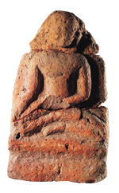
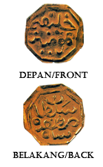
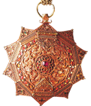
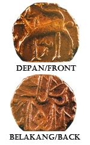
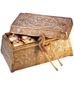
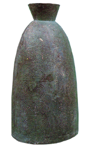

Head :Sultan Alauuddin inscripted in jawi. Tail :Khalifah Mumnin inscripted in jawi. This artefact is declared as Tangible Heritage Object under the National Heritage List 2009.

A Terracota Seated Buddha arch found at Pengkalan Bujang, South Kedah, is dated c.1000-1100CE. This artefact is declared as Tangible Heritage Object under the National Heritage List 2009.

Head : "Sultan Muzaffar Shah" inscrpted in jawi. Tail : "Khalifatul Muminin" inscripted in jawi. This artefact is declared as Tangible Heritage Object under the National Heritage List 2009.

A gold tobacco box belonging to the Terengganu Royal Family is of an excellent workmanship of a malay craftsman. It is made in the shape of a ten-pointed star with multi-petalled motif desingns. In the middle bears a flowing design ang inlaid with a ruby red stone and bordering it is a red glass stones. Approximately a circa 18th century. This artefact is declared as Tangible Heritage Object under the National Heritage List 2009.

On the head is a deer and on the tail inscripted the word Malik Al-Adil in jawi. This artefact is declared as Tangible Heritage Object under the National Heritage List 2009.

A sireh set belonging to Almarhum Sultan Abdul Samad, Selangor (1859-1880) made of silver and plated with gold. The casing is embossed with a design of ketumbit flower and butterflies with the state seal are of gold. The receptacles and the shears are also plated with gold. This artifact is declared as Tangible Heritage Object under the National Heritage List 2009.

The bronze bell was found by a villager in Kampung Pencu, Near Muar, Johor. It is believed that the bronze bell were not imported for commercial use, but as special objects to symbolize the power and status of their owner. The similarity of the design, shape and size of these bells prove that they originated from the same place. This artefact is declared as Tangible Heritage Object under the National Heritage List 2009.